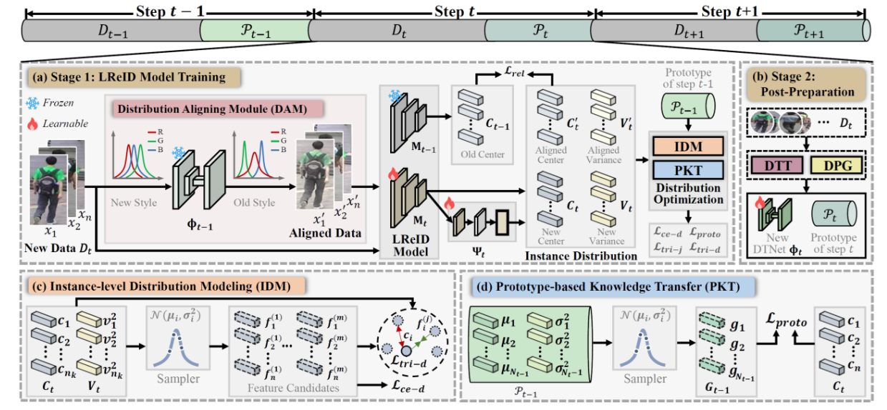

"Distribution-aware Knowledge Aligning and Prototyping for Non-exemplar Lifelong Person Re-Identification", TPAMI 2025
作者: 周嘉欢(助理教授), 徐昆仑, 卓凡, 邹旭, 彭宇新
通讯作者: 彭宇新
终身行人重识别旨在使模型能够持续学习不断涌现的新行人数据中的鉴别性信息。该任务面临的核心挑战是灾难性遗忘-模型在学习新知识时, 对旧数据的识别能力严重退化。 现有方法主要通过保留历史样本或采用知识蒸馏策略来缓解遗忘。然而, (1)保留历史样本的方法存在数据隐私风险和持续增长的存储开销问题；(2)知识蒸馏方法因强制新旧模型输出一致性, 往往限制了模型学习新知识的能力； (3)尽管原型学习在类增量学习中表现良好, 但现有方法仅为每个类别保留单一特征中心, 忽略了类内分布差异, 导致行人的细粒度知识丢失, 难以适用于依赖细粒度匹配的终身行人重识别任务。
针对上述挑战, 本文提出一种无样本保留的终身行人重识别方法DKP++, 其核心在于分布知识对齐与原型建模。具体贡献如下: (1)实例级细粒度建模: 提出实例分布建模网络, 动态捕捉行人实例的局部细节信息, 为细粒度匹配奠定基础； (2)分布感知的原型生成: 设计分布原型生成算法, 将学习到的实例级分布信息聚合为更鲁棒的类别级分布原型, 克服了单一特征中心的局限性, 保留类内差异知识。(3)分布鸿沟弥合: 引入输入端分布建模机制, 对齐新旧数据的特征分布, 提升了模型对历史知识的利用能力；(4)基于原型的知识迁移: 提出基于原型的知识迁移模块, 利用生成的分布原型和有标注的新数据协同指导模型学习, 在促进新知识吸收的同时, 实现了对旧知识的记忆。 实验结果表明, 本方法在终身行人重识别数据集LReID上取得了性能提升。
该论文的第一作者是北京大学王选计算机研究所助理教授周嘉欢，通讯作者是彭宇新教授。